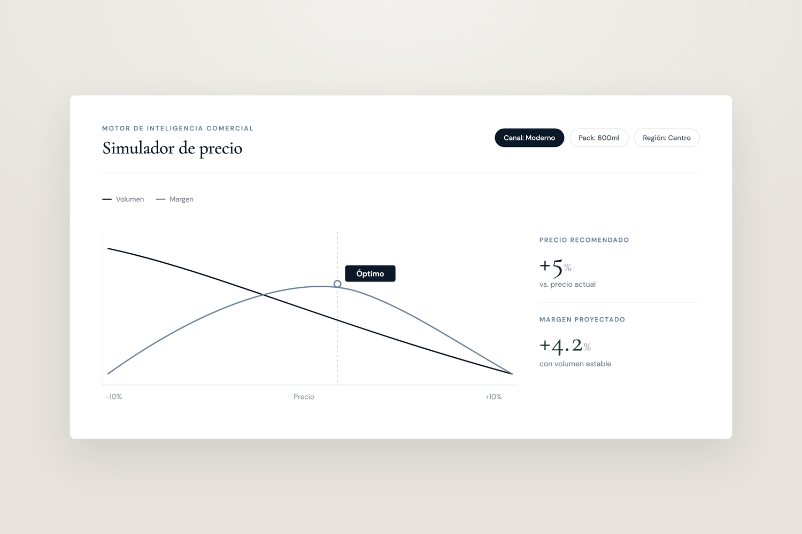

Un conjunto conectado de capacidades analíticas que convierten la data comercial en decisiones. No reportes: acciones priorizadas con los trade-offs explícitos.

Diseñamos precios con rigor económico, sensibilidad de demanda y validación conductual.
Elasticidades de precio históricas y prospectivas, propias y cruzadas.
Estructura lógica de precios a lo largo de tamaños, formatos, marcas y canales.
Rangos y puntos de inflexión donde la percepción o la demanda cambian de forma desproporcionada.
Qué le pasa al volumen y al margen bajo configuraciones de precio alternativas.
Precios centrados en el valor percibido y la disposición a pagar (WTP), no solo en el costo.
Van Westendorp, Gabor-Granger, conjoint: métodos declarados y conductuales.
Perfiles de comprador sintéticos para probar reacciones de precio antes de mover el mercado.
Medimos qué promociones crean valor y cuáles solo desplazan volumen o destruyen margen.
Volumen esperado sin promoción, y el incremento atribuible a ella.
Retorno económico después de costos completos: volumen, margen, canibalización, forward buying.
Optimización prospectiva de calendarios promocionales por retailer, SKU y mecánica.
Análisis retroactivo de patrones de desempeño promocional a lo largo de periodos y cuentas.
Proyección por escenarios del impacto promocional antes de comprometerse.
Medición estructurada de resultados reales contra esperados después de la ejecución.
Clasificación de cada promoción por su contribución económica neta.
Hacemos visible cómo se erosiona el precio neto de la lista al bolsillo, y damos a los equipos las herramientas para redirigir la inversión comercial con retorno medible.
Descomposición completa del precio de lista al precio neto después de todas las concesiones.
Ingreso efectivo realmente capturado después de todos los descuentos y rebates.
Inversión comercial total por cuenta, estructurada y no estructurada.
Estructura, gatillos y ROI de los incentivos comerciales retroactivos.
Marco para vincular la inversión comercial a resultados observables y medibles.
Retorno neto sobre la inversión comercial a nivel de cuenta individual.
Cómo se estructuran y gobiernan las condiciones, reglas y criterios de inversión a lo largo de la base de clientes.
Priorizamos canales por potencial de valor, capacidad de ganar y coherencia comercial.
Potencial económico y estratégico de cada ruta comercial.
Probabilidad realista de ganar dentro de cada canal dadas las capacidades y el posicionamiento.
Arquitectura de cobertura y servicio por canal, segmento de cliente y recurso.
Identificación y resolución de fugas de valor por desalineación de canal.
Alineación entre la arquitectura de pricing y los roles de canal para evitar el arbitraje.
Mapeo de demanda por ocasión hacia oportunidades específicas de cada canal.
Diseñamos la oferta correcta para cada ocasión, formato, punto de precio y canal, e identificamos dónde la cobertura actual deja demanda sin capturar.
Contextos concretos de consumo y compra que definen los espacios de demanda.
Qué marca responde mejor a cada ocasión de demanda.
Entrada, Frecuencia, Best Buy, Premium: roles estratégicos explícitos para cada formato.
Alineación entre formato, arquitectura de precios y requerimientos de la ocasión.
Espacios sin cubrir o mal atendidos en precio, pack, ocasión o canal.
Plan de desarrollo secuenciado, alineado a las prioridades de ocasión de demanda.
Qué va en el anaquel, en qué tienda y con qué prioridad.
Conjunto mínimo de productos requerido para competir con eficacia por cluster.
Áreas críticas de foco donde la empresa debe ganar porque concentran oportunidad o riesgo.
Reglas de surtido diferenciadas por tipo de tienda, geografía o segmento de cliente.
Elementos del portafolio que impulsan, o erosionan, el KPI prioritario.
Reglas que acotan la ejecución sin romper la lógica estratégica.
Una capa de simulación transversal a todas las capacidades, para probar decisiones antes de comprometerlas.
Comparación estructurada del estado actual contra los cambios propuestos.
Impacto en volumen y margen de movimientos de precio, cambios de arquitectura o cruces de umbral.
Pre-evaluación de mecánicas, profundidades y timing promocionales.
Modelado de movimientos de precio o cambios de portafolio de competidores y su probable impacto en el mercado.
Pruebas de sensibilidad libres de variables sobre cualquier palanca comercial.
Antes de optimizar cualquier palanca, los objetivos deben estar claros y los trade-offs acordados.
Qué métrica importa más, y en qué orden cuando entran en conflicto.
Acuerdos explícitos sobre sacrificios aceptables entre margen, volumen, participación y crecimiento.
Acuerdo interfuncional sobre la dirección comercial antes de que arranque el trabajo analítico.
Mecanismos para mantener consistencia, escalamiento y aprendizaje a lo largo de las decisiones comerciales.
El cimiento que hace posible cada una de las demás capacidades, construido desde cero cuando hace falta.
Data transaccional del canal fragmentado y estructurado.
Flujos de data estructurada desde los socios de distribución.
Normalización y estandarización a lo largo de todas las fuentes.
Captura de data en campo para precios, disponibilidad e inteligencia competitiva.
Generación de datasets estructurados para analítica y eventual monetización.
Segmentamos clientes y mercados por lo que realmente impulsa el valor, y definimos a quién ganar y a quién servir.
Segmentos construidos sobre la disposición a pagar y los drivers de valor, no solo la demografía.
Agrupación por comportamiento, necesidades y ocasiones, no solo por perfil.
El ICP, derivado de tus mejores cohortes o de una tesis prospectiva.
Una propuesta de valor, precio y nivel de servicio distinto por segmento.
k-means y métodos mixtos triangulados para mayor robustez.
Leemos el set competitivo de forma continua, en precio, portafolio y posicionamiento.
Dónde te ubicas frente al corredor de mercado, por zona y canal.
Su portafolio por ocasión y pack, contrastado con el tuyo.
Poder de marca frente a precio, y el corredor de consistencia.
Reacciones probables a tus movimientos, antes de que los hagas.
Medimos no solo cuánto vendes, sino qué tan duradero es ese ingreso.
Puente de ingresos y lectura de churn por cohorte de cliente.
NRR y GRR como señal de calidad del crecimiento.
Qué hace que los clientes se vayan, se queden o crezcan.
Ingreso recurrente frente a ingreso en riesgo, hecho explícito.
Agenda una llamada de 30 minutos. Te mostramos qué capacidades aplican a tu situación y cómo se ve el output.
Agendar llamada